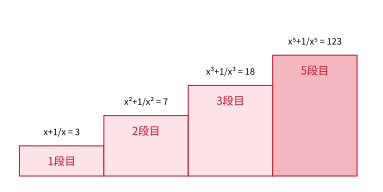

例題 6数と式 対称式（x＋1/x の利用）
次の問いに答えよ。\[x+\dfrac1x=3\ \text{のとき},\ x^3+\dfrac1{x^3}\ \text{と}\ x^5+\dfrac1{x^5}\ \text{の値}\]
解き方（まず考え方）
\(x\) の値を求めてはいけない（無理数になって大変）。\(x+\dfrac1x\) を2乗・3乗して、小さい方から順に求める。
\[x^2+\dfrac1{x^2}=\Bigl(x+\dfrac1x\Bigr)^2-2\]\[x^3+\dfrac1{x^3}=\Bigl(x+\dfrac1x\Bigr)^3-3\Bigl(x+\dfrac1x\Bigr)\]
小さい段から順に積み上げる。
コツ階段を1段ずつ上る。いきなり5段目に飛ばず、2段目→3段目→5段目と積み上げる。
解答
STEP 1 \(x^2+\dfrac1{x^2}\) を求める
2乗を展開する。
\[\Bigl(x+\dfrac1x\Bigr)^2=x^2+2\cdot x\cdot\dfrac1x+\dfrac1{x^2}=x^2+2+\dfrac1{x^2}\]\[x^2+\dfrac1{x^2}=\Bigl(x+\dfrac1x\Bigr)^2-2=3^2-2=7\]STEP 2 \(x^3+\dfrac1{x^3}\) を求める
3乗を展開する。
\[\Bigl(x+\dfrac1x\Bigr)^3=x^3+3x^2\cdot\dfrac1x+3x\cdot\dfrac1{x^2}+\dfrac1{x^3}=x^3+\dfrac1{x^3}+3\Bigl(x+\dfrac1x\Bigr)\]\[x^3+\dfrac1{x^3}=\Bigl(x+\dfrac1x\Bigr)^3-3\Bigl(x+\dfrac1x\Bigr)=3^3-3\cdot3=27-9=18\]STEP 3 \(x^5+\dfrac1{x^5}\) を求める（\(\bigl(x^2+\tfrac1{x^2}\bigr)\bigl(x^3+\tfrac1{x^3}\bigr)\) を展開）
\(\left(x^2+\dfrac1{x^2}\right)\left(x^3+\dfrac1{x^3}\right)=x^5+\dfrac1{x^5}+x+\dfrac1x\)
右辺の \(x+\dfrac1x\) は \(3\)、左辺は \(7\cdot18\)。
\[7\cdot18=x^5+\dfrac1{x^5}+3\]\[x^5+\dfrac1{x^5}=126-3=123\]【答案（テストに書く形）】
\[x^3+\dfrac1{x^3}=18,\quad x^5+\dfrac1{x^5}=123\]答
練習問題 6
- \(x+\dfrac1x=4\ \text{のとき},\ x^3+\dfrac1{x^3}\ \text{と}\ x^5+\dfrac1{x^5}\)
- \(x+\dfrac1x=5\ \text{のとき},\ x^3+\dfrac1{x^3}\ \text{と}\ x^4+\dfrac1{x^4}\)
- \(x-\dfrac1x=2\ \text{のとき},\ x^2+\dfrac1{x^2}\ \text{と}\ x^3-\dfrac1{x^3}\)